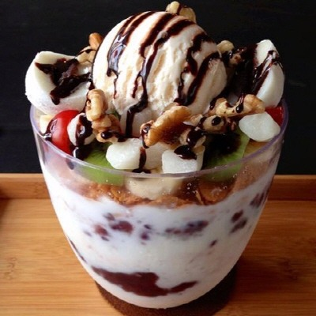

Desserts
"Dessert is like a feel-good song & the best ones make you dance."
- Chef Edward Lee

Korean Patbingsu Dessert Recipe
(Shaved Ice)
Patbingsu is a cold dessert but they always taste better in the winter time. (At least for me, that is. Am I the only one?) So "pat" stands for the sweetened adzuki red beans in the dessert and "bingsu" means shaved ice. For this dessert, you will need an electric or manual ice shaving machine, which you can easily find in Asian markets like H-Mart, Assi, or even online. If you do not feel the need to purchase such an item (for convenience), then you may find alternatives for shaving your ice (you may crush the ice in a ziplock bag AKA "forking").
Ingredients:-
Ice cubes : 1 rack(# of ice cubes may differ depending on serving size)
*You may also use other frozen liquids for this recipe, for example: flavored milk.* - Red bean (adzuki beans) paste
- Matcha powder (optional)
- Mochi
- Variety of fruits of your choice
- Condensed milk
- Ice cream flavor of your choice (optional)
- Cereal (optional)
- Syrup of your choice (optional)
- Shave the (flavored) ice in a bowl
- Drizzle the condensed milk (amount depends on how sweet you want the ice to be)
- Assemble the remaining ingredients as you wish on top of the shaved ice and serve

Mama's Homemade Lemon Meringue Pie
One 9-inch pie | 30 Min - Prep Time | 10 Min - Cook Time | 49 Min - Total | 8 Servings
- 1 cup white sugar
- 2 tbsp all-purpose flour
- 3 tbsp cornstarch
- 1/4 tsp salt
- 1 1/2 cups water
- 2 lemons, juiced and zested
- 2 tbsp butter
- 4 egg yolks, beaten
- 1 (9-inch) pie crust, baked
- 4 egg whites
- 6 tbsp white sugar
Recipe:
- Preheat oven to 350 degrees F (175 degrees C)
-
Make Lemon Filling: In a medium saucepan ...
- Whisk together 1 cup sugar, flour, constarch, and salt.
- Stir in water, lemon juiced and lemon zest.
- Cook over medium-high heat, stirring frequently, until mixture comes to a boil
- Stir in butter.
- Place egg yolks in a small bowl and gradually whisk in 1/2 cup of hot sugar mixture.
- Whisk egg yolk mixture back into remaining sugar mixture.
- Bring to a boil and continue to cook while stirring constantly until thick.
- Remove from heat.
- Pour filling into baked pastry shell.
-
Make Meringue: In a large glass or metal bowl...
- Whip egg white until foamy.
- Add sugar gradually, and continue to whip until stiff peaks form.
- Spread meringue over pie, sealing the edges at the crust.
- Bake in preheated over for 10 minutes or until meringue is golden brown.